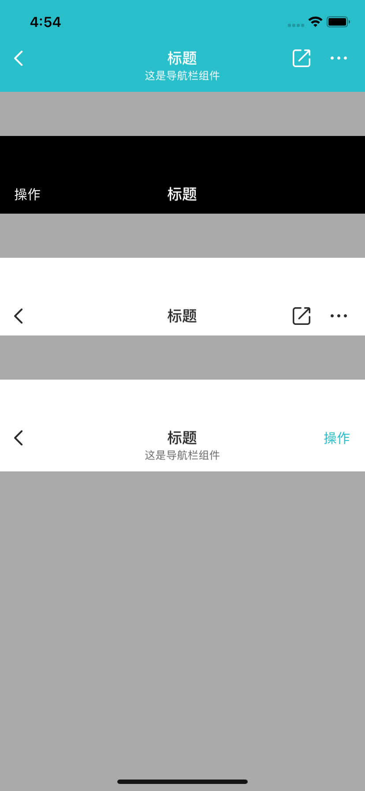

NavBar
使用示例
VMUINavBar *bar = [[VMUINavBar alloc]initWithStyle:VMUINavBarStyleLight];
bar.sTitle = @"标题";
bar.subTitle = @"这是导航栏组件";
UIButton *backButton = [UIButton new];
[backButton setImage:[UIImage imageNamed:@"icon_navbar_back_bk"] forState:UIControlStateNormal];
[backButton addTarget:self action:@selector(backAction) forControlEvents:UIControlEventTouchUpInside];
UIButton *operationBtn = [UIButton new];
[operationBtn setTitle:@"操作" forState:UIControlStateNormal];
operationBtn.titleLabel.font = [UIFont vmui_systemFontOfSize:15];
[operationBtn setTitleColor:RGBOF(0x28BECA, 1.0) forState:UIControlStateNormal];
bar.arr_leftBarButton = @[backButton];
bar.arr_rightBarButton = @[operationBtn];
[self.view addSubview:bar];
主要属性和方法
| Name | Type | Description |
|---|---|---|
| style | enum | 主题样式：VMUINavBarStyleDart，VMUINavBarStyleLight缺省：VMUINavBarStyleLight |
| sTtile | NSString | 主标题 |
| subTitle | NSString | 副标题 |
| fBarHeight | CGFloat | 返回计算好的高度 |
| arr_leftBarButton | string | 左边按钮数组，对象只要是UIButton类即可 |
| arr_rightBarButton | reference | 右边按钮数组，对象只要是UIButton类即可 |
| showLoading() | Void | 开始展示loading |
| stopLoading() | Void | 停止展示loading |
| config | VMUINavBarStyleConfig | UI配置类 |
VMUINavBarStyleConfig辅助类主要属性
| Name | Type | Description |
|---|---|---|
| color_background | UIColor | 背景颜色 |
| font_title | UIFont | 主标题字体 |
| font_subTitle | UIFont | 副标题字体 |
| color_title | UIColor | 主标题颜色 |
| color_subTitle | UIColor | 副标题颜色 |
预览
